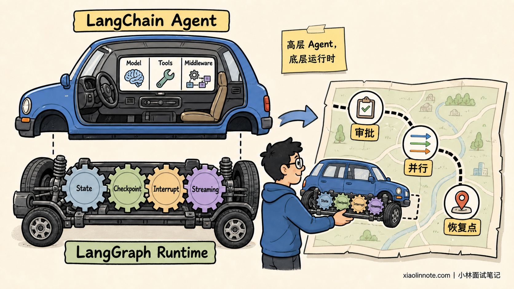
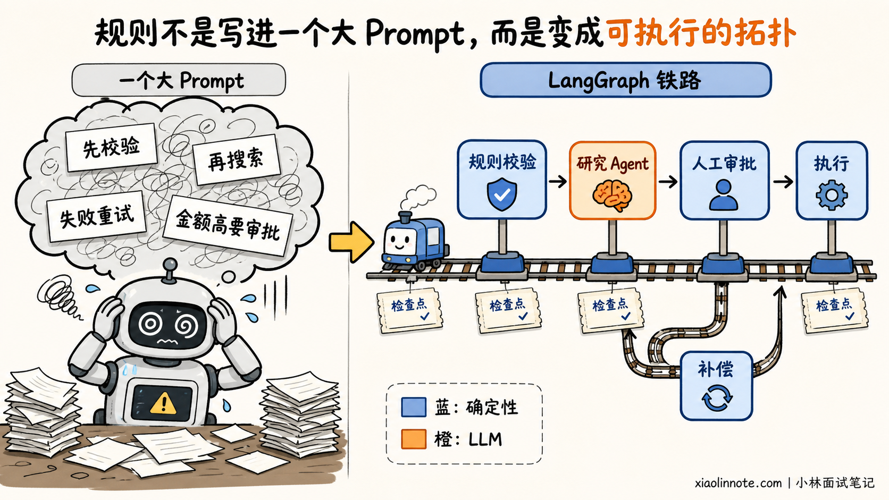
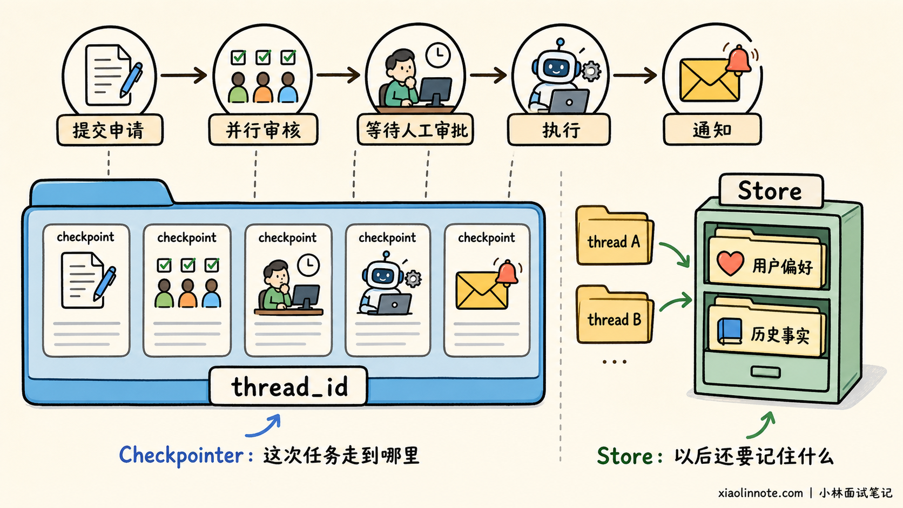
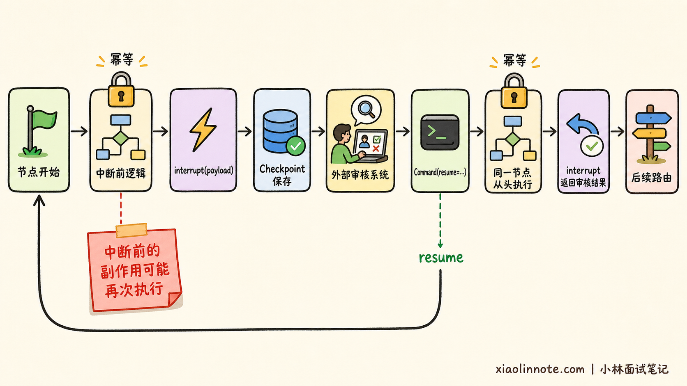
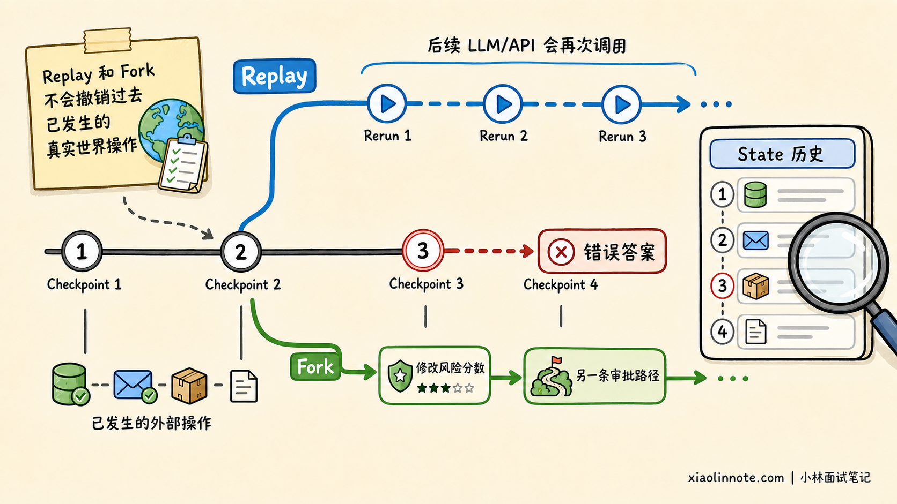
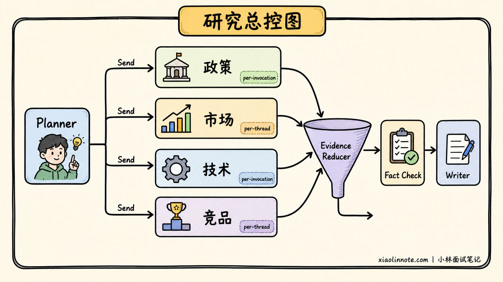
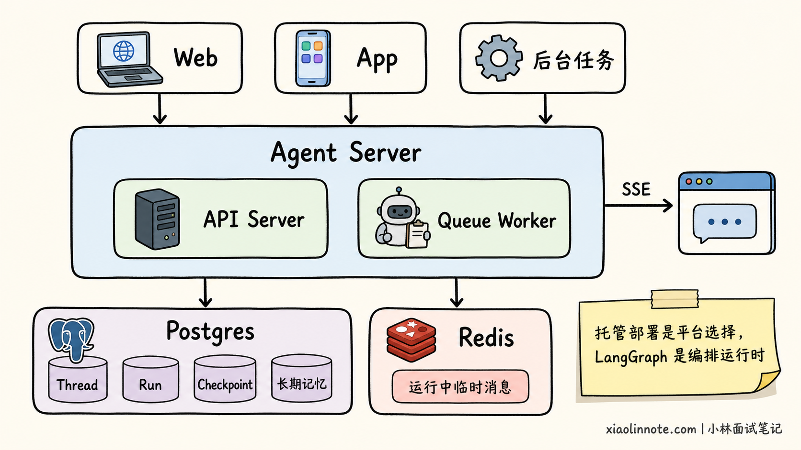

本篇目录
10. LangGraph 相比于 LangChain 有哪些核心优势？更适配哪些 Agent 场景？
👔面试官：LangGraph 相比 LangChain 有什么优势？
🙋♂️我：LangChain 只能写线性 Chain，LangGraph 才支持分支、循环和 Agent。
👔面试官：这还是早期教程里的印象。LangChain v1 的 create_agent 本身就是基于 LangGraph 构建的图运行时，标准 Agent loop 本来就有循环和条件路由。
🙋♂️我：那 LangGraph 的优势就是多了一张流程图，复杂项目用它看起来更高级。
👔面试官：图不是装饰。State、节点边界、并行汇合、检查点、中断与恢复都要进入执行语义，只画一张图解决不了可靠性问题。
🙋♂️我：懂了，只要项目要持久化、流式输出或记忆，就必须抛弃 LangChain，全部改成 LangGraph。
👔面试官：又把上下层说成二选一了。LangChain Agent 已经继承这些底层能力。真正需要下沉到 LangGraph 的时机，是标准 Agent loop 不足以表达业务流程，而不是看到某个功能名就重写项目。
判断是否需要 LangGraph，关键要看开发者需要把控制精确到哪一层。
💡 简要回答
LangGraph 和 LangChain 不是互斥的两套 Agent 框架。LangChain v1 提供模型、工具、中间件和预构建 Agent loop，create_agent 本身就运行在 LangGraph 上；LangGraph 是更低层的编排框架与运行时，让开发者直接控制 State、节点、边、路由、并行、子图、中断和恢复。
LangGraph 把复杂 Agent 的运行过程变成显式、可持久化、可观察、可恢复的业务状态机，这才是它的核心优势。
我们既可以用 StateGraph 声明拓扑和共享状态，也可以用 Functional API 在普通 Python 控制流上增加检查点与恢复能力。
当任务会持续很久、必须人工审批、要从故障点继续，或者需要并行研究与多 Agent 协作时，LangGraph 的优势最明显。
Checkpointer 保存线程内状态快照，Store 保存跨线程长期记忆；interrupt() 可以暂停任意业务节点；时间旅行可以从旧 checkpoint 重放或分叉；节点级容错则让失败路径也能被建模。
如果需求只是常见的「模型选择工具 -> 调用工具 -> 返回模型」循环，我会优先使用 LangChain create_agent，再用 middleware 完成提示词、重试、护栏和审批等定制。
只有当业务拓扑、恢复边界或多角色协作成为主要复杂度时，我才直接使用 LangGraph，也常把 LangChain Agent 作为图中的节点或子图复用。
📝 详细解析
两者为什么不对立？
很多林友听到「相比」两个字，就会下意识列一张功能表：LangChain 有模型和工具，LangGraph 有状态、循环和持久化。这个答法看似清楚，实际会制造一个错误前提，好像用了 LangChain 就没有 LangGraph 的运行能力。
打个比方，LangChain 像一辆已经装好方向盘、刹车和导航的汽车，日常驾驶直接用就行；LangGraph 更像开放底盘、动力分配和道路控制系统。当业务真的需要多路调度、途中停车、事故恢复和路线回放时，底层控制才会成为核心价值。
对应到开发中，LangChain 帮我们快速获得一个常见形态的 Agent；LangGraph 让我们继续向下控制完整业务流程，例如任务在哪暂停、失败后从哪恢复、过程如何持续反馈给用户。
截至 2026 年 7 月，官方也把 LangChain 定位为高层 Agent 框架，把 LangGraph 定位为低层编排框架与运行时。LangChain v1 的 create_agent 会构建一个基于 LangGraph 的图运行时，所以两者不是互斥关系。

LangChain Agent 同样能获得持久化、流式输出和人工介入能力。直接使用 LangGraph 时，我们还能决定这些能力放在哪个节点、围绕哪些状态生效、失败后从哪里恢复，以及不同子流程如何组合。
为什么要把流程与状态摊开？
为什么标准工具调用 Agent 一复杂，就容易让人失去控制？因为模型通常既在理解问题，又在决定下一步做什么。
流程只有两三个工具时问题不大。可一旦加入权限校验、并行取证、质量评估、人工审批和失败补偿，把所有规则塞进 Prompt，就等于把业务流程交给一个概率模型临场发挥。
LangGraph 的核心价值，是让确定性规则与模型决策各自待在合适的位置。需要模型判断的步骤交给 Agent，需要严格执行的权限、金额阈值、审批顺序和结束条件写成节点与边。这样模型仍然有自主性，但自主性被放在明确的护栏里。
拿采购流程来说，State 就像一张不断补充的申请单，Node 是预算检查、合规检查等办事窗口，Edge 则规定材料下一步送到哪里。这就是 StateGraph 最核心的三个角色。
如果预算和合规检查同时往申请单里写结果，谁也不能覆盖谁，这时要由 Reducer 规定如何合并更新。
基础流程理解以后，再看两个高级原语就容易了。一个节点既要改状态又要改道时，可以返回 Command；运行时才知道要派出多少个研究任务时，可以用 Send 动态分发。先理解它们解决的问题，比一次背下所有类名更重要。
这比「多了一张流程图」多在哪里？答案是图结构会直接决定执行。哪些节点能并行，哪些节点必须等前置任务完成，哪份状态会被保存，恢复后从哪里继续，都不再只是文档上的约定。

这种显式状态还有一个工程上的好处：我们可以把输入、输出和内部状态分开。外部请求只提交用户问题，内部节点维护证据、风险分、重试次数和审批意见，最后只返回对外结果。复杂流程的中间变量不必全部塞进消息历史，也不必让每个节点看到所有数据。
自由度也带来更多责任。State 字段怎么设计，并行写入如何合并，节点边界切多细，都要由开发者决定。LangGraph 不会因为用了图就自动让流程合理，错误的 State 设计照样会造成状态膨胀、并发覆盖和难以维护。
两种编排 API 怎么选？
提到 LangGraph，很多人只知道 StateGraph。当前官方还提供 Functional API，两者共享同一套运行时能力，但编程方式不同。
如果流程有复杂分支、并行汇合、多 Agent 路由，或者团队需要直观看清每条路径，Graph API 更合适。开发者声明 State、Node 和 Edge，业务拓扑非常明确，Studio 里也更容易沿着节点观察状态变化。
如果团队已经有一大段普通 Python 流程，只是希望增加检查点、任务恢复和人工暂停，Functional API 往往更省改造成本。@entrypoint 表示工作流入口，@task 把有副作用或非确定性的操作变成可记录任务，流程仍然可以写普通的 if、for 和函数调用。
两者可以组合使用。外层多 Agent 调度可以使用 StateGraph，某个数据处理节点内部再调用 Functional API 工作流。面试时能说出这一层，说明你理解了如何按复杂度选择表达方式。
| 需求特征 | 更自然的入口 | 原因 |
|---|---|---|
| 分支和循环很多，需要看清完整拓扑 | Graph API | 节点、边和共享 State 显式，便于可视化与评审 |
| 多路并行后汇合，或多 Agent 交接 | Graph API | 并发关系、Reducer 和子图边界更容易建模 |
| 已有过程式代码，希望少改代码 | Functional API | 保留普通 Python 控制流，用装饰器增加运行时能力 |
| 线性流程加少量条件和人工确认 | Functional API | 局部变量与函数作用域更自然，样板代码更少 |
| 不同子流程复杂度差异很大 | 混合使用 | 外层图负责调度，内部函数工作流负责局部步骤 |
流程跨小时后如何继续？
一个 Agent 运行几十秒，进程挂了可以让用户重试。可如果它要运行几小时，期间已经查了数据库、调用了外部服务，还在等审批，重新从第一步开始就不只是浪费 token，还可能重复发邮件、重复创建订单。
LangGraph 的 persistence 会在图执行过程中保存 checkpoint，并按 thread_id 组织线程状态。这样一个运行可以暂停，甚至服务重启后再从已保存状态恢复。官方把 durable execution 作为核心能力，重点不只是「落盘」，而是把任务结果、状态快照和恢复位置纳入运行时。
先区分两个很容易混淆的概念。
Checkpointer 保存某个线程的图状态快照，支撑会话连续性、中断恢复和故障恢复。Store 保存图状态之外的应用数据，适合跨线程使用的用户偏好、事实与共享知识。
前者回答「这次任务走到哪里」，后者回答「以后其他任务还要记住什么」。真实项目经常同时使用，而不是二选一。

但 durable execution 不是数据库开关。恢复时，节点里的代码可能重新执行；从旧 checkpoint 重放时，后续模型调用和 API 请求也会再次发生。
因此，外部副作用必须有幂等保护，例如使用业务幂等键、upsert、发送记录或先查后写。复杂节点还应该把非确定性操作和副作用划分成更清楚的恢复边界。
LangGraph 能提供可靠执行的基础设施，却不能替业务自动发明幂等语义。面试时如果只说「加 Checkpointer 就绝对不会重复执行」，反而暴露了对恢复机制理解不够。
人工怎样进入任意一步？
Agent 真正进入生产系统后，完全自治往往不是终点。退款、付款、删库、发送正式邮件、发布内容等动作，需要人看一眼；有些流程还要等人工补充材料、修改状态，甚至等待几天后再继续。
LangGraph 的 interrupt() 可以放在节点内部任意位置。当代码触发中断时，运行时保存状态，并把一个可序列化的中断载荷交给外部系统。流程可以一直等待，之后使用相同 thread_id 和 Command(resume=...) 恢复，外部输入就成为 interrupt() 的返回值。
这比只支持「确认或取消」更灵活。审核员可以批准、拒绝，也可以修改金额、补充证据或给出反馈，后续路由再根据这份输入决定去哪。多级审批也可以拆成多个节点，让每个角色只看到自己需要的信息。
LangChain v1 已经有 HumanInTheLoopMiddleware，如果需求只是对若干敏感 Tool Call 做批准、编辑或拒绝，它通常更省事。LangGraph 的优势出现在审批对象不是一个标准工具调用，或者暂停点要嵌进更长的业务工作流时。
还有一个必须主动说的坑：节点恢复时会从节点开头重新执行，而不是从 interrupt() 那一行继续跑。因此，放在中断之前的副作用也要幂等，interrupt() 的调用顺序不要随意改变，中断载荷应保持可序列化。

失败后为什么不必整段重跑？
传统脚本失败后，开发者常见的选择只有两个：整段重跑，或者手工改数据库再祈祷流程能继续。LangGraph 通过 checkpoint、节点边界和错误策略，把失败处理变成工作流的一部分。
当前官方文档把节点失败处理拆成可组合的三层：Retry Policy 负责按异常类型和退避策略重试，Timeout 限制单次尝试时间，Error Handler 在重试耗尽后接管错误。处理函数还可以返回 Command，一边更新错误状态，一边把流程送往降级、补偿或人工处理节点。
并行节点失败时又会怎样？LangGraph 会保存同一步中已经成功完成节点的结果。恢复时，成功分支不必全部重跑，只重试失败部分。
这对并行抓取多个数据源特别有价值，否则一个慢接口失败，就会让其他已经成功的请求也重新付费。
时间旅行处理的是另一个问题。通过状态历史找到旧 checkpoint 后，可以从旧位置重新执行，也可以先修改旧状态，再分出另一条轨迹。
它适合复现 Agent 为什么走错路、尝试不同人工决策，或者修正错误的中间状态。

这里也要避免夸大。Time travel 不是把程序时光倒流后原样播放录像。checkpoint 之前的节点会跳过，之后的节点会重新执行，因此模型输出、网络响应和外部副作用可能不同。它提供的是「可定位、可重放、可分叉」的调试基础，不是自动撤销现实世界已经发生的操作。
复杂任务如何并行又汇合？
深度研究类任务通常要先拆主题，再并行搜索多个来源，随后交叉验证、合并证据、发现空白后继续补搜，最后统一写报告。这套流程很适合用图来表达。
Graph API 支持把一个任务拆成多条并行分支，再把结果汇合回来。如果任务数量在运行时才能确定，可以使用 Send 动态创建分支。
并行节点更新同一个 State 字段时，需要通过 Reducer 明确合并方式，不能指望最后写入者碰巧正确。
子图则解决模块化问题。一个完整 LangChain create_agent 返回的本来就是图，可以作为外层 StateGraph 的节点或子图。不同团队也可以分别维护研究、合规、财务等子图，只要约定好输入输出状态，父图不必知道内部细节。
子图的记忆范围需要显式选择。
一次性子任务可以让每次调用都从新状态开始。确实需要连续记忆的子 Agent，才让子图在同一线程的多次调用间积累状态。完全无状态的调用虽然更简单，但也不能依赖中断与可靠恢复能力。

多 Agent 也会增加成本。角色越多，提示词、上下文交接、错误定位和 Token 成本越高。
很多交接场景使用单 Agent 加 middleware 会更简单。只有角色需要不同工具、不同状态结构、独立生命周期，或者确实需要并行和跨团队维护时，子图才值得引入。
运行中怎样持续看见进度？
复杂 Agent 的耗时主要花在搜索、文件处理、子 Agent 调用和人工等待上。如果前端只显示一个转圈图标，用户不知道系统卡住了还是仍在工作。
LangGraph 的 streaming 不只有模型 Token。它还能输出每步 State 更新、模型消息、自定义进度、checkpoint 和任务状态。
产品界面可以展示「正在查询政策库」「已完成 3/5 个来源」「等待财务审批」，开发者则能观察哪个节点更新了什么、哪个任务失败。这样，底层事件才真正变成用户能理解的进度。
LangChain Agent 因为运行在 LangGraph 上，也能使用相同的底层流式能力。直接使用 LangGraph 的优势，仍然是节点和业务阶段由我们定义，所以流式事件可以与产品进度条、审计日志和告警规则精确对应。
这种可观察性与 LangSmith tracing、Studio 配合后更有价值。开发者可以查看实际走过的节点路径、状态变更和耗时，复杂流程不再只剩一长串难以还原的模型日志。
状态如何走向生产部署？
长时间运行的 Agent 不能只靠进程内列表保存状态，也不能把用户偏好和当前任务进度混进一个向量库。LangGraph 将线程内状态与跨线程长期资料分开后，系统边界会清楚很多。
短期记忆跟随 State 和 Checkpointer，由 thread_id 隔离，适合当前会话消息、已完成步骤和审批上下文。
长期记忆进入 Store，按 namespace 与 key 组织，用来召回用户偏好和历史事实。生产环境还要使用数据库后端，并补齐租户隔离、保留期限、删除更正与敏感信息治理。
部署也要讲清边界。开源 LangGraph 是编排框架和运行时，不等于购买某个托管服务。
团队可以自行托管并接自己的 Checkpointer、Store 和队列，也可以使用托管的 Agent Server。后者把图、持久化数据库与任务队列组合起来，更适合后台运行、流式交互和有状态长任务。

这套部署能力也是为什么 LangGraph 适合长任务，但不要说成「用了 LangGraph 就自动高可用」。自托管时，数据库、任务队列、Worker 扩缩容、重试策略、监控和数据保留都仍然是团队责任。即使使用托管平台，也需要做容量评估、幂等设计和故障演练。
完整流程示例
假设我们要做一个采购 Agent。申请提交后，要并行做预算检查和合规检查，两个结果齐了才能进入人工审批，审批通过才调用采购系统，拒绝则结束。这个流程里，模型可以帮助理解材料，但顺序与权限不能交给模型自由发挥。
下面用简化代码表达核心结构。示例重点是图的控制语义，不包含真实模型、数据库和鉴权实现。
from typing import Literal, TypedDict
from langgraph.checkpoint.memory import InMemorySaver
from langgraph.graph import END, START, StateGraph
from langgraph.types import Command, interrupt
class PurchaseState(TypedDict, total=False):
# request_id 也可作为外部采购接口的幂等键
request_id: str
amount: float
budget_ok: bool
compliance_ok: bool
approved: bool
result: str
def normalize_request(state: PurchaseState) -> dict:
# 真实项目应在这里完成字段校验和权限检查
return {"amount": round(state["amount"], 2)}
def check_budget(state: PurchaseState) -> dict:
# 该节点可以替换为预算系统查询，并配置重试与超时
return {"budget_ok": state["amount"] <= 100_000}
def check_compliance(state: PurchaseState) -> dict:
# 与预算检查写入不同字段，因此两个节点可以安全并行
return {"compliance_ok": True}
def human_review(state: PurchaseState) -> dict:
# 暂停流程，将两项检查结果交给审核系统
review = interrupt(
{
"request_id": state["request_id"],
"budget_ok": state["budget_ok"],
"compliance_ok": state["compliance_ok"],
}
)
return {"approved": bool(review["approved"])}
def route_after_review(state: PurchaseState) -> Literal["execute", "reject"]:
# 审批结果决定后续确定性路径
return "execute" if state["approved"] else "reject"
def execute_purchase(state: PurchaseState) -> dict:
# 真实调用必须携带 request_id，防止恢复或重试造成重复采购
return {"result": f"采购申请 {state['request_id']} 已执行"}
def reject_purchase(state: PurchaseState) -> dict:
# 拒绝路径不触发外部采购副作用
return {"result": "采购申请未通过"}
builder = StateGraph(PurchaseState)
builder.add_node("normalize", normalize_request)
builder.add_node("budget", check_budget)
builder.add_node("compliance", check_compliance)
builder.add_node("human_review", human_review)
builder.add_node("execute", execute_purchase)
builder.add_node("reject", reject_purchase)
builder.add_edge(START, "normalize")
# 从同一节点扇出，预算和合规检查进入并行分支
builder.add_edge("normalize", "budget")
builder.add_edge("normalize", "compliance")
# 使用多起点边做 fan-in，两项检查都完成后才进入人工审批
builder.add_edge(["budget", "compliance"], "human_review")
builder.add_conditional_edges("human_review", route_after_review)
builder.add_edge("execute", END)
builder.add_edge("reject", END)
# 内存检查点仅用于示例，生产环境应替换为数据库后端
graph = builder.compile(checkpointer=InMemorySaver())
# thread_id 是暂停、恢复和状态历史的定位依据
config = {"configurable": {"thread_id": "purchase-2026-001"}}
graph.invoke(
{"request_id": "PO-001", "amount": 58_000},
config=config,
)
# 审核员稍后提交结果，图从同一线程的中断点恢复
final_state = graph.invoke(
Command(resume={"approved": True}),
config=config,
)
print(final_state["result"])这段代码体现了四件事：业务拓扑是显式的，两项检查能并行且有明确汇合点，人工审批可以跨时间暂停，执行动作有业务幂等键。真正上线时，还要给外部查询增加 Retry Policy 与 Timeout，给执行失败设计补偿或人工接管路径，并把 InMemorySaver 换成持久化实现。
如果用 LangChain，也不是不能实现这个系统。更自然的组合通常是：用 create_agent 做「材料理解」或「异常解释」节点，外层采购流程仍由 StateGraph 控制。这样高层 Agent 抽象和低层业务编排各司其职。
哪些场景适合 LangGraph？
理解了前面的能力，场景判断就不用死记。我们只要先问一句：这个系统最难的是「让模型会用工具」，还是「让整个任务可靠地走完一条复杂路线」？
如果难点只是让模型从几个工具中做选择，标准 Agent 往往已经足够。可一旦业务顺序不能交给模型自由发挥，问题就变了。理赔、退款、采购、合同审核和生产变更都有明确阶段、权限与审批点，模型只能参与理解和判断，真正的路线必须由确定性规则控制。LangGraph 的价值，就是把模型能力嵌进业务流程，而不是让 Prompt 充当流程引擎。
路线明确以后，再看它是否会跨时间运行。深度研究、报表生成、代码迁移和跨系统工单可能持续数十分钟到数天，中间还要等待人或外部事件。这类任务需要 checkpoint、interrupt 和 durable execution 保住进度，否则每次等待或故障都可能让流程从头再来。
任务继续变复杂时，单条路线还会长出并行分支。Planner 临时拆出多个研究主题，各分支分别搜索、抽取与验证，再用 Reducer 汇总证据；多个 Agent 也可能因为拥有不同工具、状态或团队边界而组成子图。此时 Send、fan-out、fan-in 和 subgraph 正好用来表达这些并发与协作关系。
最后再看团队是否需要干预中间状态。复杂 RAG 会在证据不足时改写查询并重新检索，模型走错路线时也需要查看 checkpoint、修改状态后重放。只看最终答案已经无法解释问题时，显式节点、状态历史和分叉能力才会真正转化为调试价值。
哪些场景不必用 LangGraph？
LangGraph 更底层，不等于更适合所有项目。一个只需要查天气、查订单、总结文档的标准工具调用 Agent，使用 create_agent 往往更快、更短，也更符合团队认知。
动态提示词、模型切换、工具过滤、消息摘要、重试、护栏和敏感工具审批，优先看看 LangChain middleware 能不能解决。
如果流程只有固定的 Prompt、模型和解析器，也不一定需要 Agent，更不用为了「图」而引入 LangGraph。普通函数、LCEL 或一个队列任务可能就够了。
下面这张选型表比「简单用 LangChain，复杂用 LangGraph」更有操作性：
| 判断问题 | 优先 LangChain create_agent | 考虑直接使用 LangGraph |
|---|---|---|
| 主流程是什么 | 常见模型与工具循环 | 多阶段业务工作流 |
| 路由由谁决定 | 大部分由模型按工具描述决定 | 模型决策与确定性规则混合 |
| 状态复杂度 | 消息为主，少量自定义字段 | 多类业务状态、Reducer、内部通道 |
| 运行时长 | 单次交互或短任务 | 跨小时、跨天、等待外部事件 |
| 人工介入 | 审批敏感工具调用 | 任意阶段补充、修改、审批和改道 |
| 并行结构 | 少量并行工具调用 | 动态 fan-out、fan-in、map-reduce |
| 角色数量 | 单 Agent 或简单子 Agent | 多 Agent、子图、明确 handoff |
| 故障处理 | 通用重试与错误包装 | 节点级恢复、补偿、历史分叉 |
| 团队成本 | 希望快速交付，少写编排代码 | 愿意维护图、状态和恢复语义 |
最稳妥的选型路径通常是渐进式的。先用 LangChain 搭出一个能工作的 Agent，当 middleware 已经开始承担业务路由、状态字段越来越多、任务必须跨时间恢复时，再把外围流程下沉到 LangGraph。已有 Agent 不必推倒重来，可以直接成为图里的节点或子图。
图越复杂，不代表系统越智能。节点过细会增加 checkpoint、序列化和维护成本，节点过粗又会降低恢复粒度。成熟的设计会根据副作用、重试、人工介入和可观测性划分边界，不追求节点数量。
🎯 面试总结
先把关系说准：LangChain v1 的 Agent 本身构建在 LangGraph 上，所以两者不是互斥框架。LangGraph 让开发者从高层 Agent loop 下沉，显式控制整个有状态业务流程。
回答可以抓住三条主线。第一是控制，State、节点、边和确定性规则都能进入执行拓扑。第二是可靠，checkpoint、interrupt 和节点级容错让长任务可以暂停与恢复。
第三是工程化，流式事件、短期与长期记忆以及部署服务，可以支撑有状态、长时间运行的生产系统。
场景上，LangGraph 更适合高风险审批、跨小时或跨天任务、并行深度研究、多 Agent 协作、自纠错 RAG 和需要精确调试的复杂工作流。它尤其适合把确定性步骤与 LLM 驱动步骤混在一张图里，让模型负责需要判断的部分，让业务规则负责不能出错的部分。
边界也很清楚：标准工具调用 Agent 优先用 LangChain create_agent，简单审批优先用 middleware。只有当业务拓扑、状态作用域、恢复边界或多角色协作成为主要复杂度时，才直接使用 LangGraph。
成熟项目常把 LangChain Agent 做成 LangGraph 中可复用的节点或子图。
📚 参考资料
- LangGraph 官方文档：Overview
- LangChain 官方文档：Agents
- LangGraph 官方文档：Graph API
- LangGraph 官方文档：Functional API
- LangGraph 官方文档：Graph API 与 Functional API 选型
- LangGraph 官方文档：Persistence
- LangGraph 官方文档：Interrupts
- LangGraph 官方文档：Time Travel
- LangGraph 官方文档：Fault Tolerance
- LangGraph 官方文档：Subgraphs
- LangGraph 官方文档：Streaming
- LangGraph 官方文档：Memory
- LangSmith 官方文档：Agent Server
对了，AI Agent的面试题会在「公众号@小林面试笔记题」持续更新，林友们赶紧关注起来，别错过最新干货哦！